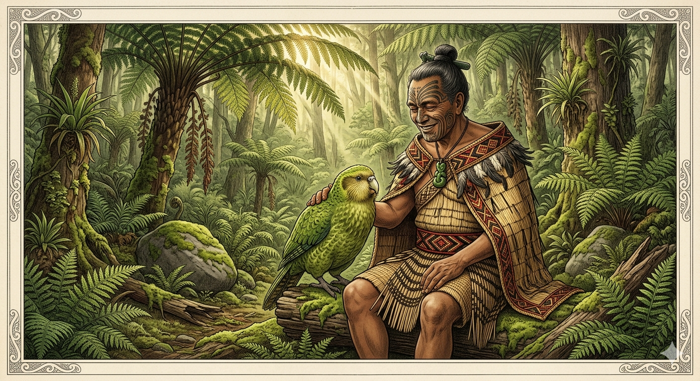
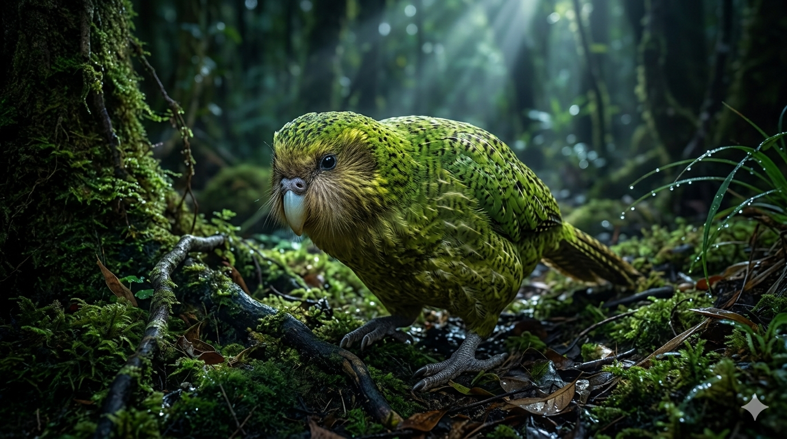

הקקפו
משד הלילה המרעים של אירופה לתוכי האהוב של המאורי
מחקר אטימולוגי: מקור השמות
השם המדעי הטקסונומי: Strigops habroptilus
השם המדעי הוענק לו בשנת 1845 על ידי הזואולוג האנגלי ג'ורג' רוברט גריי (George Robert Gray, 1808–1872), והוא מתאר בדיוק את הבלבול של המדענים האירופאים הראשונים שחשבו שמדובר בהכלאה בין ינשוף לתוכי:
- Strigops (יוונית): הלחם של המילים Strix / Strig (ינשוף) ו-Ops (פנים או עין). כלומר: "בעל פנים של ינשוף". זאת בשל "דיסקת השמע" מנוצות שיש לו סביב העיניים, האופיינית לינשופים ודורסי לילה.
- habroptilus (יוונית): הלחם של המילים Habros (רך / עדין) ו-Ptilon (נוצה). התרגום המלא של השם המדעי הוא: "בעל פני-הינשוף בעל הנוצות הרכות". (הנוצות שלו רכות במיוחד כי אין להן את הנוקשות הנדרשת לתעופה).
השם המקומי (מאורית): Kākāpō
- Kākāpō (מאורית): מורכב משתי מילים בשפת המאורי (ילידי ניו זילנד): Kākā (שם גנרי לתוכי) ו-Pō (לילה). הפירוש הפשוט והמדויק הוא: "תוכי הלילה".
ההבדל בין הפחד האירופאי לאהבה המאורית
כשהחוקרים והמתיישבים האירופאים הראשונים הגיעו לניו זילנד במאה ה-18 וה-19, הם נתקלו בתופעה מצמררת. בלילות, היערות רעדו מצלילי "בום" עמוקים שנשמעו למרחק של קילומטרים. מכיוון שהקקפו מוסווה לחלוטין בצבעי ירוק-אזוב, הם לא ראו מי מפיק את הקול והפיצו שמועות על שדי אדמה המרעידים את הקרקע.
אולם, עבור בני המאורי שהגיעו לניו זילנד מאות שנים קודם לכן, לא היו שום מפלצות ביער. הם הכירו את התוכי הענק והשמנמן היטב. הם צדו אותו למאכל והשתמשו בנוצותיו לגלימות, אך גם העריכו את האינטליגנציה הרבה שלו. משפחות מאוריות רבות גידלו את הקקפו כחיית מחמד אהובה ושובבה, שנקשרה לבני אדם והתנהגה בדומה לכלב בית נאמן.
המציאות: הקסם והטרגדיה של התפתחות בבידוד
האגדה: שד יער מסתורי שמכה באדמה או ינשוף מכושף (כפי שדמיינו האירופאים).
המציאות: הקקפו הוא תוצר של מיליוני שנות אבולוציה בניו זילנד – אי שלא היו בו יונקים טורפים יבשתיים כלל. בהיעדר טורפים, הקקפו איבד את הצורך לחפש מחסה בעצים, חסך אנרגיה, השמין, איבד את שרירי התעופה שלו, והפך לתוכי קרקעי ייחודי.
מאפיינים ביולוגיים: שובר כל שיא לתוכי
- תוכי של "ריחות": לקקפו יש חוש ריח מפותח מאוד כדי למצוא מזון בלילה. הוא עצמו מדיף ריח חזק מאוד ומתוק שמתואר כ"ריח של ארון עתיק וטחוב יחד עם פרחי פריזיה ודבש". הריח הזה עזר להם למצוא אחד את השנייה, אך הפך אותם לטרף קל לכלבים ולחתולים של המתיישבים.
- קריאות החיזור ("הבום"): אותן קריאות שהפחידו את האירופאים הן מנגנון חיזור. הזכר מנפח שק אוויר מיוחד בחזה שלו לגודל של כדורגל, ומשמיע קריאות "בום" כדי להזמין נקבות מכל רחבי היער.
- קופא מול סכנה: ההגנה היחידה של הקקפו מול טורפו המקורי (עיט האסטי שנכחד) הייתה קיפאון מוחלט (פריז). נוצותיו הסוו אותו כטחב מושלם מהאוויר. לרוע המזל, מול חולדות וטורפים קרקעיים חדשים, זו התבררה כאסטרטגיה קטלנית.
זואולוגיה ומחזור חיים (תעודת זהות מורחבת)
תיעוד חזותי (לחץ להגדלה)

הידע המקומי: הקקפו כחיית מחמד אהובה של המאורי

המציאות: התוכי הקרקעי ששכח לעוף